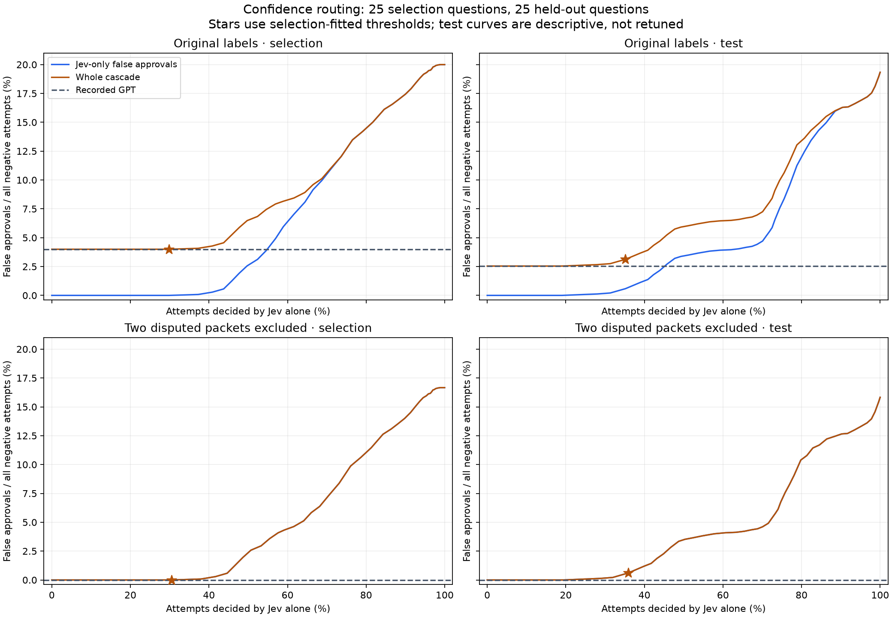

Can Jev screen proposals before a GPT judge?
Result: lower simulated cost, but GPT-level false-approval risk did not hold out
A threshold selected on 25 questions let Jev decide 35.18% of attempts on the other 25 questions. The observed token-equivalent cost estimate fell 28.87%, from $45.8566 to $32.6175. But false approvals rose from 61 to 75. Excluding the disputed held-out packet leaves 0 for GPT versus 14 for the cascade.
This does not establish a GPT-safety-equivalent cheaper gate. It is an offline, post-hoc routing simulation on a small curated packet set, not a deployed cascade or a coding-success benchmark. All costs below are usage-based estimates, not invoices. This reanalysis made zero new Jev or GPT calls.
Verdict: GPT stays the gate. At this threshold, Jev is not a safe pre-screen.
What was measured
The original comparison used 50 SWE-bench Verified questions, 99 authored proposal packets, and 100 repeats per packet per judge: 9,900 attempts each for Jev 1.13.0 and GPT 5.6-sol with high reasoning. There are 50 positive-labelled and 49 negative-labelled packets, not 9,900 independent bugs. Questions were curated for small single-Python-file reference repairs across eleven repositories; they were not a population sample.
All original inputs, labels and receipts remain unchanged. Every one of Jev's 9,899 successful responses retained answers.permission.probabilities and confidence. The one DNS failure had no provider response; it remains an error and was not rerun. GPT's 18 original request errors also remain in the data. paired-trials.csv exposes the probabilities, confidence, paired verdicts, usage, costs and both clocks needed to reproduce this analysis without private logs.
Per-packet repeatability
| Judge | Majority correct / packets | Negative packets majority-approved | Negative packets ever-approved | Mean pairwise flip rate |
|---|---|---|---|---|
| Jev | 86/99 | 9/49 | 14/49 | 1.31% [0.23%, 2.78%] |
| GPT | 97/99 | 2/49 | 2/49 | 0.99% [0.12%, 2.26%] |
per-packet.csv contains all 99 packets and both judges. Majority uses valid decisions only. A 50/50 tie is explicitly tie, not silently approved or rejected; one Jev packet ties. Ties/no-decision packets do not count as majority-correct. “Ever-approved” means at least one valid approval among repeats.
The primary flip rate is the probability that two distinct valid repeats disagree: 2 × approvals × rejections / [n × (n − 1)]. The table also exports the minority fraction and chronological adjacent-repeat flip rate, skipping error-adjacent pairs rather than bridging across errors. Repeated confidence or verdict consistency is not evidence of correctness.
Confidence intervals use 10,000 packet-bootstrap resamples, retaining all 100 paired repeats when a packet is sampled. Judges and cascade differences use the same resample weights. They do not treat repeated attempts as independent questions. These are percentile intervals, not a non-inferiority test; packets within the same question may still be correlated.
Label sensitivity for both judges
| Labels | Judge | Agreement incl. errors [95% CI] | False approves / negative attempts | Negative packets majority-approved | Majority correct |
|---|---|---|---|---|---|
| Original | Jev | 87.44% [80.74%, 93.34%] | 964/4900 | 9/49 | 86/99 |
| Original | GPT | 97.91% [95.21%, 99.70%] | 161/4900 | 2/49 | 97/99 |
| Two disputed packets excluded | Jev | 89.25% [83.00%, 94.84%] | 764/4700 | 7/47 | 86/97 |
| Two disputed packets excluded | GPT | 99.54% [99.11%, 99.81%] | 0/4700 | 0/47 | 97/97 |
The exclusions are q29/stage1 (pylint-6903, _cpu_count) and q08/stage1 (django-15127, get_level_tags). Their source citations are false, but the proposed locations may still support alternative repairs. The Pylint alternative was demonstrated in memory; the Django lifecycle alternative was not runtime-validated. Exclusion is an explicit post-hoc sensitivity, not a replacement ground truth. Other alternative repairs were not exhaustively ruled out.
These metrics are agreement with frozen authored labels, not pure wrong-location detection or real repair correctness. GPT's zero false approvals after exclusion produce a degenerate empirical packet-bootstrap interval of [0, 0]. That does not prove zero population risk; there are only 47 negative packets overall and 23 in the reduced held-out set.
Question-disjoint threshold selection
Before fitting this reanalysis, analysis-protocol.json froze a deterministic SHA-256 split: 25 selection questions / 50 packets, and 25 test questions / 49 packets. All stages and repeats of a question stay together. The split seed is jev-q50-offline-cascade-2026-09-27-v1; ranking uses SHA-256(seed + : + instance ID). No test probability, verdict or label enters candidate generation or threshold selection.
This is not a prospectively unseen benchmark: original aggregate and packet findings had already been inspected before the new split. The split prevents direct test-set threshold tuning now; it cannot undo prior exposure. The test curves are descriptive and were not used to retune the selected threshold.
The routing score is the probability assigned to Jev's recorded native verdict, probabilities[choice]. A successful Jev decision is accepted when its score is at least the threshold; otherwise the cascade uses GPT's recorded decision for that exact packet and repeat. The separate confidence field is published but not used. Neither field is assumed to be a calibrated probability of correctness. Both confident approvals and confident rejections can bypass GPT.
Candidate thresholds are selection-set score boundaries and their next representable floats, plus 0.5, 1 and an all-defer value above 1. We choose the threshold with greatest Jev-alone coverage subject to the whole cascade's selection-set false approvals being no greater than GPT's; equal-coverage ties choose the larger threshold. The all-defer candidate reproduces GPT decisions, but still includes the wasted Jev call in simulated cost and time.
With original labels, a looser threshold 0.80 makes Jev's own autonomous false-approval contribution 3.88%, below GPT's 4.00%, at 54.56% coverage. But the whole cascade then reaches 7.44% because GPT can add errors on deferred cases. Matching only Jev's contribution is insufficient.
The whole-cascade rule instead selects 0.89, with 29.82% selection coverage. Independently applying the same rule after excluding the disputed selection packet also selects 0.89. The machine-readable output includes exclusion sensitivity at the unchanged primary threshold as well as the separately fitted sensitivity.

Bottom panels: the blue line sits under the orange one, since GPT adds zero false approves there.
Blue: Jev's autonomous false approvals divided by all negative attempts. Orange: all cascade false approvals. Dashed: recorded GPT. Stars use the selection-fitted threshold 0.89. The CSV also reports the conditional rate among autonomously decided negatives; its denominator is different. “Coverage” means fraction of packet-repeat attempts, not fraction of distinct questions. All thresholds and denominators are in threshold-curves.csv.
Held-out results: 4,900 paired attempts on 25 questions
| Policy | Agreement incl. errors [95% CI] | False approves / 2,400 negatives | Observed token-cost estimate | Unknown-cost components | Latency p50 / p95 |
|---|---|---|---|---|---|
| Jev only | 90.51% [82.14%, 97.61%] | 464 | $0.8408 | 0 | 0.615 / 0.798 s |
| GPT only | 98.41% [95.76%, 99.86%] | 61 | $45.8566 | 7 | 3.995 / 16.433 s |
| Cascade | 98.31% [95.47%, 99.90%] | 75 | $32.6175 | 6 | 3.839 / 16.150 s |
The cascade's held-out false-approval rate is 3.12% [0.00%, 9.04%], versus 2.54% [0.00%, 8.32%] for GPT. Its error count is 6, versus 7 for GPT. Paired packet-bootstrap differences, coverage intervals, false rejections, majority verdicts and mean-latency intervals are in analysis.json. Intervals hold the fitted threshold fixed; they do not include threshold-selection uncertainty. Latency p50/p95 values are point estimates, not bootstrap intervals.
Same held-out evaluation after excluding the disputed Django packet
| Policy | Agreement incl. errors [95% CI] | False approves / 2,300 negatives | Observed token-cost estimate | Unknown-cost components |
|---|---|---|---|---|
| Jev only | 92.40% [84.27%, 98.52%] | 364 | $0.8321 | 0 |
| GPT only | 99.67% [99.35%, 99.90%] | 0 | $43.4256 | 6 |
| Cascade | 99.56% [98.92%, 99.94%] | 14 | $30.1778 | 5 |
The threshold remains 0.89, and coverage is 35.92%. The remaining 14 cascade false approvals are concentrated in one other packet. This reduced-label evaluation still does not meet GPT's observed zero-false-approval result.
Cost and latency accounting
| Judge / token type | USD per million | USD per token |
|---|---|---|
| Jev input (flat, including any unreported cache use) | $0.042 | $0.000000042 |
| Jev output | $0 | $0 |
| GPT fresh input | $4 | $0.000004 |
| GPT cached input | $0.40 | $0.0000004 |
| GPT output, including reasoning | $20 | $0.00002 |
These are the frozen experiment tariffs, not a claim about current list prices. GPT output_tokens already includes reasoning tokens, so reasoning is charged once, not added again. Provider-reported cached input receives the $0.40/M rate; 61.26% of original GPT input tokens were reported cached. A fresh session and cache key did not imply zero provider cache hits. Jev's cached/reasoning token details were not reported; missing details are not evidence of zero internal cache or reasoning.
Original observed token estimates were $1.684814 Jev and $91.271018 GPT. Those were estimates for the recorded usage, not certified payments; GPT used the existing OAuth-backed provider. All 19 original errors lack usage. Missing usage remains unknown, not zero.
Simulation always includes Jev's recorded usage, then includes GPT usage only on fallback. Totals sum known components and report unknown components separately; fully_priced_attempts and their mean cost are also exported. This is counterfactual token-equivalent cost, not new spend or a guaranteed deployed bill. Selective requests could change cache hits, batching and service behavior.
Cascade latency is recorded Jev duration + recorded GPT duration on fallback, or Jev duration alone otherwise. Original paired requests ran concurrently; these sums simulate sequential routing and were not observed end-to-end. Primary tables use the original monotonic clock. UTC-derived distributions are also exported: a confirmed 929-second host sleep overlapped ten original requests, including all eight GPT socket timeouts, and most sleep was excluded by the host's monotonic clock. Those failures cannot be attributed solely to GPT reliability.
Who made the proposals and labels?
The authoring assistant's recorded model ID was openai-codex/gpt-6-astra. Retained structured session records identify its annotation-writing tool calls on 2026-09-19; provenance.json preserves the narrow, non-secret evidence.
build_package.py deterministically constructs the proposal packets from those annotations and commit-pinned source. Positive proposals use selected reference-repair locations. Negatives place a real source quotation at a decoy location or assert a fabricated source-level execution trace; the supplied host-read source itself remains authentic. These are synthetic authored proposals, not a sample of mistakes naturally made by live coding investigators.
The same builder assigns the final stage approved and earlier stages disapproved. The labels were frozen before judge inference, using authored explanations, baseline source and reference repair/test diffs. Reference regression suites were not executed to validate these packet labels. There is no recorded independent blinded human annotation pass. Human validation of the underlying SWE-bench Verified issues is a different claim.
Disclosure correction: the frozen ground_truth.json says “Human causal annotations.” The retained session shows assistant-authored annotations; that wording must not be presented as proof of independent human labelling. We preserve the original file for audit and correct its interpretation here. The authoring assistant and GPT judge are both OpenAI-family models, so possible author/judge alignment is another unmeasured limitation.
Exact backend mapping and why Sol high
Both backends receive the same complete packet: questions.permission contains the identical instructions and approved/disapproved criteria; state contains the original issue, diagnosis, intended locations, source evidence and provenance. Expected labels and prior-stage verdicts are not sent.
- Jev: POST the packet object plus
model: jev-1.13.0tohttps://api.typesafe.ai/v1/systemone. Its binary question ID ispermission. The original experiment retained the exact stable request body for all 99 packets. - GPT: use
model: gpt-5.6-sol,reasoning.effort: high, no tools,store: false, streaming, and the fixed top-level instructions fromprotocol.json. The user text is exactlyDecision packet:\n+ the original packet JSON bytes +\n\n+ the fixed verdict-only deliverable. The original experiment retained all stable request fields and exact prompt text. Only per-call UUID cache/session metadata is omitted from those templates; the original collector generates it afresh. These are request templates, not a claim that provider-native interfaces are identical.
The fifty-question experiment retained Sol high from the preceding twenty-question live gate comparison. [INFERENCE] Continuity of the comparator is the supported operational explanation; no separate model/effort selection study or independent rationale was retained. It is not evidence that high reasoning was necessary, cost-optimal or the fairest matched-budget gate. Terra/Luna or another low-reasoning comparator was not run; no claim about those operating points is made.
Reproduce without credentials or network
Download and unpack jev-q50-reanalysis.zip, then run:
uv run --with-requirements reanalysis/requirements.txt python reanalysis/analyze.py \
--from-paired reanalysis/paired-trials.csv --output reproduced
uv run --with-requirements reanalysis/requirements.txt python -m unittest discover \
-s reanalysis -p test_analysis.py
The commands above do not call a provider. Installing dependencies may require network once; the analysis itself does not. The original collector is included for transparency, not invoked by reproduction. Do not run it to replay scored calls.
The separate ZIP contains all 99 original packets, all 198 backend prompt mappings, the 65 referenced source files, frozen controls/annotations/labels, sanitized paired trial data, analysis and construction code, tests, exact dependency versions, charts, the original post and a SHA-256 inventory. It is linked from this page, not embedded in the HTML. Raw conversations, credentials, authorization headers, native databases and raw provider-response logs are excluded. input-receipt-sha256.json is a private audit binding and is not required by the public reproduction.
Sources and reuse
The underlying issue dataset is SWE-bench Verified. The experiment's source provenance records repository, exact base commit, original raw-source URL and hash. The bundle carries 89 upstream license/notice files, including primary notices at all 50 selected source revisions, in reanalysis/upstream-licenses/ with an explicit manifest. Upstream material retains its own licenses; public availability is not blanket permission to relicense all packets under one license. No blanket relicensing is asserted for this mixed corpus.
The complete numerical results, not a selected best-of run, are preserved. No labels were rewritten, no failed trial was retried, no GPT calls were added, and no optional comparator was run.